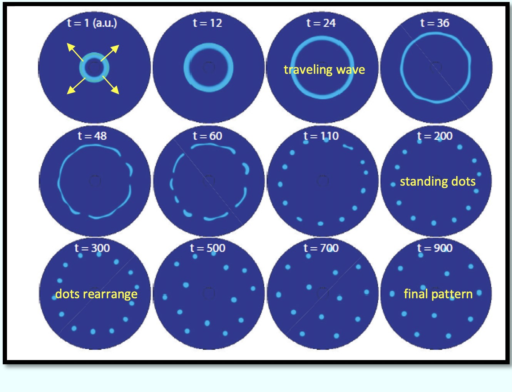

A citizen science organization dedicated at furthering scientific awareness in children, and contributing to global well being. Currently active in 4 countries, with 600 students and 150 teachers all over the world.
Citizen science happens when ordinary people observe the world around them simply out of curiosity. We believe that simple measurements taken over a long time can give valuable information about the environment we live in. We wish to empower ordinary citizens with the right mindset and tools to explore the world around them.
Learn more...
 About
About
About
Modeling and simulation scientist at Janssen Pharmaceuticals of Johnson & Johnson, at La Jolla, CA.
Former postdoctoral fellow in the Picower Institute for Learning and Memory at Massachusetts Institute of Technology (MIT), working on computational analysis and modeling of temporal and spatial dynamics in the cerebral cortex.
I received my Ph.D. in 2019 from the Department of Electrical and Computer Engineering at Johns Hopkins University, modeling complex signaling networks, investigating reaction pathways, spatio-temporal dynamics and control in cell biology.
Founder: Open Field Collective
Research Summary: Signaling, Patterns, and Nonlinear Systems

Cellular signals interact in complex networks to form patterns, both in time and space. Some patterns are time-based (temporal patterns), such as concentration oscillations in biomolecules, while other patterns propagate across regions (spatial patterns), such as inscriptions on sea-shells and Turing patterns. They control many biological processes such as brain activity, cell migration, and embryo development. Video: Simulated examples of temporal and spatial patterns in cells.
My interests lie at the intersection of mathematics and biology, specifically in how non-linear dynamics govern the manifestation of spatial/temporal dynamics, and their functional relevance in cellular processes. I aim to utilize mathematical tools to analyze, model and control the genesis and sustenance of these biological dynamics, potentially allowing one to understand and regulate the function of the underlying system.

A coupled network model of cellular protrusions - Miao and Bhattacharya et al. Molecular Systems Biology, 2019

A novel method of pattern formation - Bhattacharya et al. Science Advances, 2020
Control of a dynamical system - Bhattacharya et al. Conference on Decision and Control (CDC), 2018
Controlling cell migration modes - Miao, Bhattacharya, et al. Nature Cell Biology, 2017
Education
- Postdoctoral Fellow, Picower Institute for Learning and Memory — Advisor: Dr. Earl K. Miller, Massachusetts Institute of Technology, USA
- Ph.D., Electrical and Computer Engineering — Advisor: Dr. Pablo A. Iglesias, Cellular Signaling and Control Laboratory, The Johns Hopkins University, USA
- MS, Electrical and Computer Engineering — The Johns Hopkins University, USA
- B.Tech, Instrumentation Engineering — Indian Institute of Technology (IIT), Kharagpur, India
Media Coverage
- Visit to read articles in the news about Open Field Collective — Multiple news sources
- Anesthetic drastically diverts the travels of brain waves — ScienceDaily
- “Traveling” nature of brain waves may help working memory work — MIT News
- Pushing closer to a new cancer-fighting strategy — SCIENMAG, Science Magazine
- Manipulating "signaling" molecules to control cell migration — ScienceDaily
- Hopkins researchers feature on magazine cover — JHU Engineering
- Scientists Manipulate Molecules to Control Cell Migration — Hopkins Medicine
Selected Publications
Google Scholar Link
- Bhattacharya, S., Brincat S., Lundqvist M., & Miller, E. K. (2022). Traveling waves in the prefrontal cortex during working memory. Plos. Computational Biology, 18(1), e1009827.
- Bhattacharya, S., Donoghue, J. A., Mahnke, M., Brincat, S. L., Brown, E. N., & Miller, E. K. (2022). Propofol anesthesia alters cortical traveling waves. Journal of Cognitive Neuroscience, 1-13.
- Bhattacharya, S., Banerjee, T., Miao, Y., Zhan, H., Devreotes, P. N., & Iglesias, P. A. (2020). Traveling and standing waves mediate pattern formation in cellular protrusions. Science Advances, 6(32), eaay7682.
- Zhan, H., Bhattacharya, S., Cai, H., Iglesias, P. A., Huang, C. H., & Devreotes, P. N. (2020). An Excitable Ras/PI3K/ERK signaling network controls migration and oncogenic transformation in epithelial cells. Developmental Cell.
- Bhattacharya, S., Cauchois, M.L.B., Iglesias, P. A., & Chen, Z. S. (2021). The impact of a closed-loop thalamocortical model on the spatiotemporal dynamics of cortical and thalamic traveling waves Nature Scientific Reports.
- Miao, Y.* and Bhattacharya, S.* (*equal contributions), Banerjee, T., Sharif, B. A., Long, Y., Inoue, T., Iglesias, P. A., and Devreotes, P. N. (2019). Wave patterns organize cellular protrusions and control cortical dynamics. Molecular Systems Biology, DOI 10.15252/msb.20188585.
- Yang, J. M., Bhattacharya, S., West-Foyle, H., Hung, C. F., Wu, T. C., Iglesias, P. A., and Huang, C. H. (2018). Integrating chemical and mechanical signals through dynamic coupling between cellular protrusions and pulsed ERK activation. Nature communications, 9(1), 4673.
- Bhattacharya, S., Biswas, D., Enciso, G. A., and Iglesias, P. A. (2018, December). Control of chemotaxis through absolute concentration robustness. In 2018 IEEE Conference on Decision and Control (CDC) (pp. 4360-4365). IEEE.
- Li, X., Edwards, M., Swaney, K. F., Singh, N., Bhattacharya, S., Borleis, J., ... and Devreotes, P. N. (2018). Mutually inhibitory Ras-PI (3, 4) P2 feedback loops mediate cell migration. Proceedings of the National Academy of Sciences, 115(39), E9125-E9134.
- Bhattacharya, S., and Iglesias, P. A. (2018). The threshold of an excitable system serves as a control mechanism for noise filtering during chemotaxis. PloS one, 13(7), e0201283.
- Bhattacharya, S., and Iglesias, P. A. (2018). Controlling excitable wave behaviors through the tuning of three parameters. Biological cybernetics, 1-10.
- Devreotes, P. N., Bhattacharya, S., Edwards, M., Iglesias, P. A., Lampert, T., and Miao, Y. (2017). Excitable signal transduction networks in directed cell migration. Annual review of cell and developmental biology, 33, 103-125.
- Miao, Y., Bhattacharya, S., Edwards, M., Cai, H., Inoue, T., Iglesias, P. A., and Devreotes, P. N. (2017). Altering the threshold of an excitable signal transduction network changes cell migratory modes. Nature cell biology, 19(4), 329.
Research Projects
Keywords: Reaction-diffusion modeling, Feedback signaling and control, Excitable/Non-linear dynamics, Cortical networks, Traveling waves
Signaling Pathways
Building networks of signaling species that control biological dynamics in order to model and predict behavior.
Relevant Publications:
a) Signaling networks in cell migration, Ann. Rev. Cell and Dev. Biology, 2017,
b) A coupled network model controls wave patterns that regulate cellular protrusions, Molecular Systems Biology, 2019
Wave Patterns
Using excitable wave theory to control and alter wave characteristics to create diverse patterns such as traveling, rotating and standing waves in connected networks.
Relevant Publications:
a) Wave control through three parameters, Biological Cybernetics, 2018,
b) Altering wave speed and range to change migratory phenotype, Nature Cell Biology, 2017
c) Traveling and standing waves in cells, Science Advances, 2020

Neural, Thalamocortical and Cortical Networks
Analyzing wave patterns in the brain to understand and model their relevance in cognition and function, in application to working memory, anesthesia and thalamocortical networks.
Relevant Publications:
a) Controlling waves patterns in the thalamocortical system, Nature Scientific Reports, 2021
b) Traveling waves in the prefrontal cortex during working memory, biorxiv, 2021

Biological Controller Design
Designing and incorporating controllers to alter biological dynamics, such as create efficiently migrating cells that have increased speed and directional sensing.
Relevant Publications:
a) Noise filtering though threshold manipulation in an excitable system, Plos One, 2018,
b) Control of migration through absolute concentration robustness, CDC, 2018
Collaborations
- Peter N. Devreotes — Cell Biology, Johns Hopkins Medicine, USA
- Chuan-Hsiang Huang — Pathology, Johns Hopkins Medicine, USA
- Zhe S. Chen — Neuroscience and Physiology, New York University, USA
- German A. Enciso — Mathematics, University of California Irvine, USA
Tools/Skills
- Languages: C/C++, MATLAB, Python
- Theory: Computational Biology, Non-linear Dynamical Systems, Reaction-diffusion Systems, Control Theory
- Modeling: Reaction-pathways, Coupled Oscillators, Stochastic Simulations, Feedback Signaling
- Techniques: Wave Detection, Circular Statistics, Logistic Regression, Dimensionality Reduction, Convolutional Neural Networks, Image Processing, Level Sets
Contact Me
Email: sayakb66@gmail.com
LinkedIn: www.linkedin.com/in/sayak-bhattacharya66
Other Outreach Projects
- Founding member at Open Field Collective - a citizen science venture trying to further scientific education and environmental awareness among students.
- Volunteer at IndiaCOVIDSOS - a project aimed to propagate strategies to mitigate the COVID-19 crisis in India.
- Volunteer at EvidyaLoka - an Indian NGO that focuses on imparting education to students of Rural government schools in India by crowdsourcing volunteer teachers and connecting them to the rural government schools.